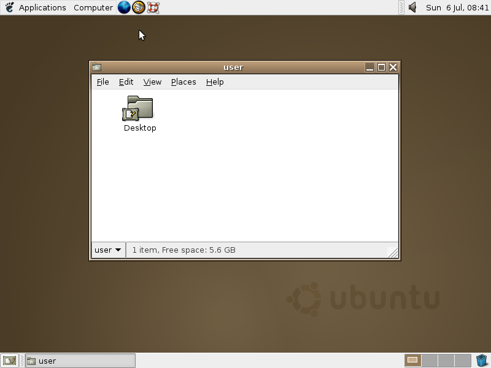
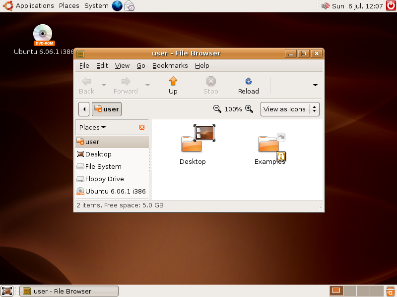
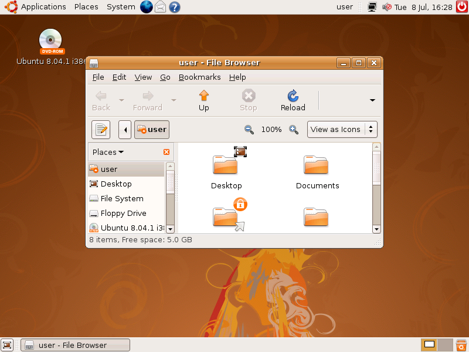
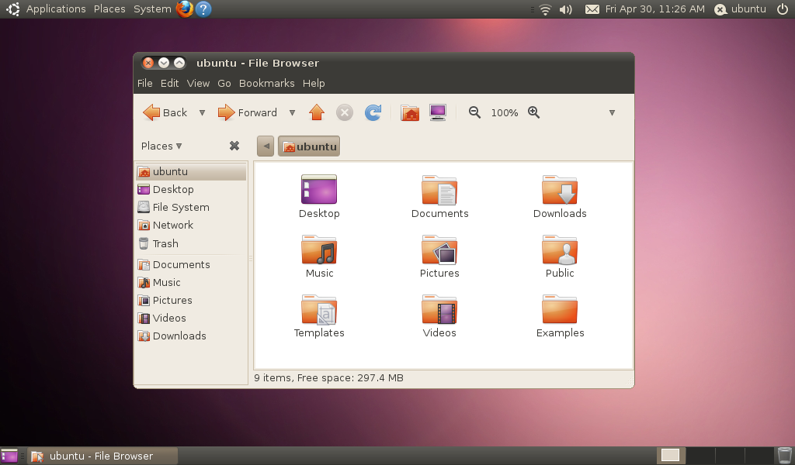
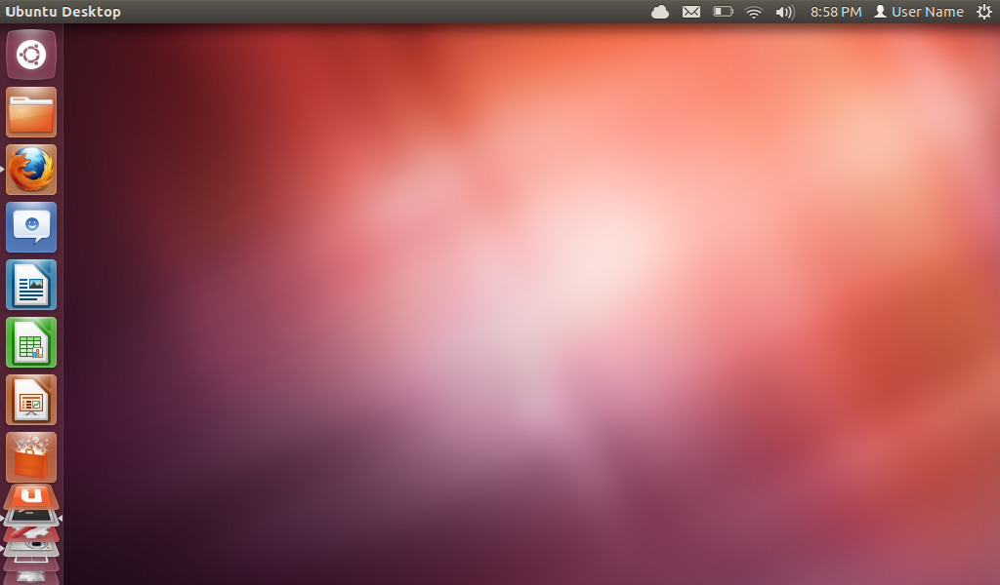
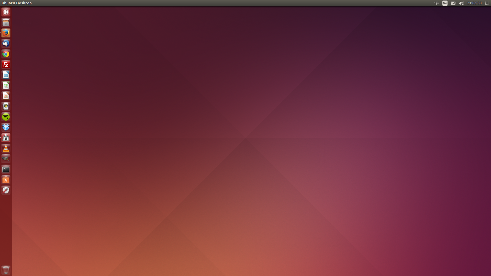
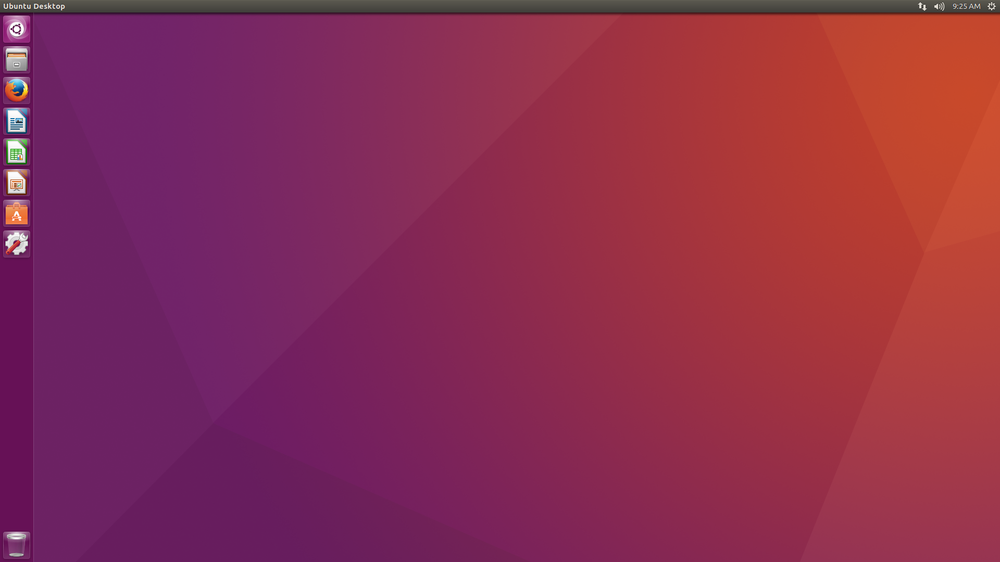
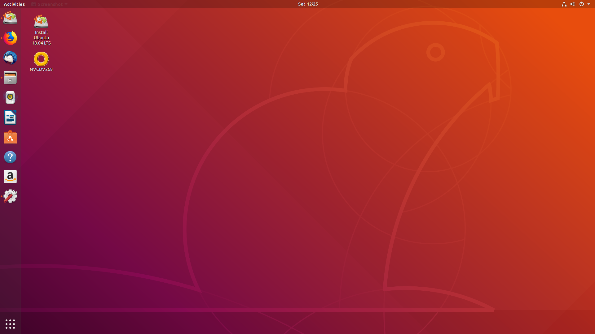
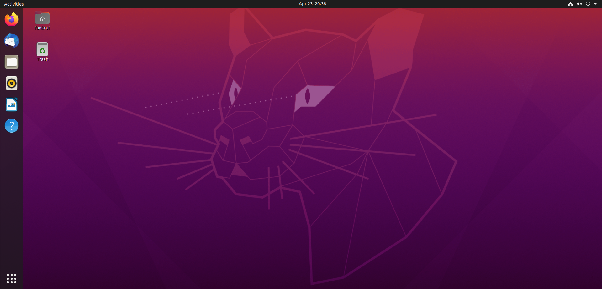

CIS 527
Lab 1
Image Source: Wikipedia
Linux
- Developed by Linus Torvalds in 1991
- Open Source Kernel
- Compatible with Unix via POSIX Standard
- Usually Grouped with Other Tools Like GNU into a Linux Distribution

Image Source: Wikipedia

Image Source: Wikipedia
Ubuntu
Nguni Bantu: humanity
- Based on Debian Linux
- New Release Every 6 Months
- Long Term Support (LTS) Release Every 2 Years
- LTS Supported for 5 Years
- Generally Most Popular Linux Disto

Image Source: Wikipedia
Image Source: Wikipedia
Image Source: Wikipedia
Image Source: Wikipedia
Image Source: Wikipedia
Image Source: Wikipedia
Image Source: Wikipedia
4.10 - Warty Warthog
Image Source: Wikipedia
6.06 - Dapper Drake LTS
Image Source: Wikipedia
8.04 - Hardy Heron LTS
Image Source: Wikipedia
10.04 - Lucid Lynx LTS
Image Source: Wikipedia
12.04 - Precise Pangolin LTS
Image Source: Wikipedia
14.04 - Trusty Tahr LTS
Image Source: Wikipedia
16.04 - Xenial Xerus LTS
Image Source: Wikipedia
18.04 - Bionic Beaver LTS
Image Source: Wikipedia
20.04 - Focal Fossa LTS
Image Source: Wikipedia
Installing Ubuntu

Image Source: Geek Stuff
Image Source: Geek Stuff
Get Started!
Complete Lab 1, Task 4:
Install Ubuntu 20.04